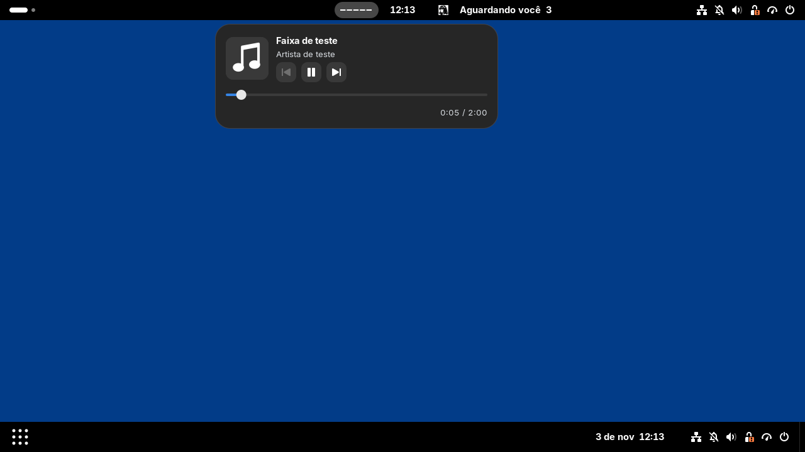
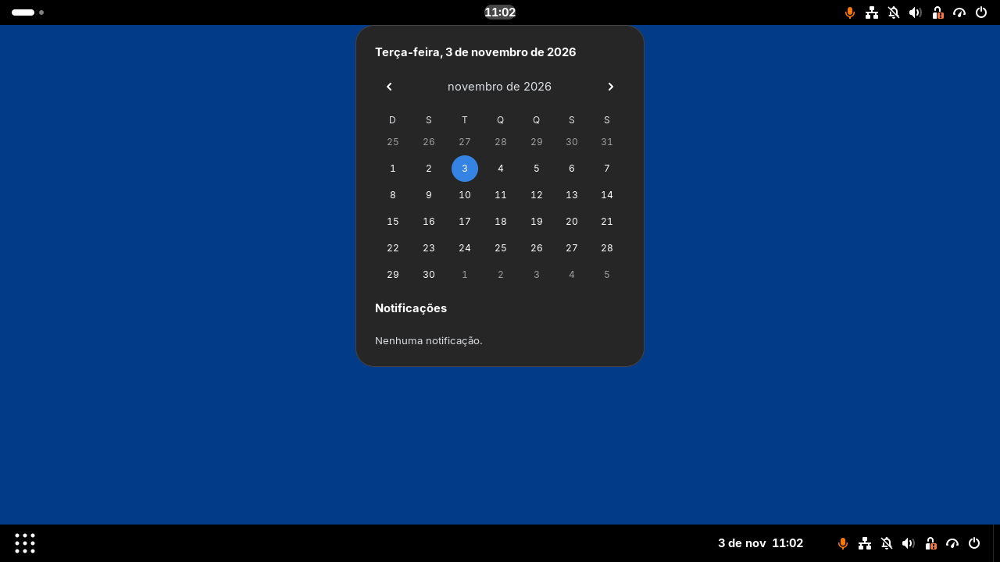

Capturas reais do GNOME Shell 50.6, rodando em sessão isolada dentro da toolbox work. Dash to Panel 74 ativo, com a barra superior nativa preservada. Música e sessões de IA foram produzidas por fixtures locais, não por ferramentas de IA reais.
Menu da IA: três sessões de teste, ícones coloridos, estado, projeto e tempo. O número 3 na barra conta sessões conectadas.

Menu de música horizontal: capa e informações ao lado dos controles, com progresso e tempo na mesma linha abaixo. Player MPRIS de teste e capa obtida por HTTP. O arquivo da capa e o player são fixtures do teste.

Menu do relógio conforme o formulário: data completa, grade do mês e notificações em uma única coluna. Os controles de datas e os cartões de notificação usam widgets reais do GNOME. O painel tem largura e altura fixas, com notificações em uma área de rolagem. A hora permanece no centro do monitor.
O que foi validado
Relógio em 24 horas, sem data, no centro do monitor; módulos laterais independentes.
Menus de música, calendário e IA abrem separadamente; abrir um fecha o anterior.
Controles MPRIS, permissões do player, busca, progresso e capa via HTTP.
Três sessões conectadas, incluindo uma ociosa; expiração de estado não inventa conclusão.
Aviso de conclusão único, respeitando Não Perturbe; reativação sem repetir o aviso.
Desativar restaura o relógio e o painel de calendário original; reativar retorna à composição compacta do formulário.
CAVA recebeu cinco bandas reais da saída de áudio na toolbox work, em teste separado. O visualizador não está ativo nestas capturas porque a sessão de teste usa um player sem produzir som.
Integrações de IA
O serviço e os adaptadores de hooks estão implementados. Os hooks ainda não foram instalados nas suas ferramentas. Claude Code e Hermes não estão instalados neste ambiente: os adaptadores foram verificados com payloads de teste. Codex CLI 0.166.0 informa suporte estável a hooks; uma sessão real ainda depende de instalar e revisar os snippets.
Abrir o terminal, tokens/custos e os demais recursos escolhidos para depois continuam no backlog.
Testar sem alterar o desktop
cd ~/Code/QuietClock
toolbox run -c work python3 scripts/nested.py
Abre o GNOME Devkit com um perfil e barramento próprios. Fechar a janela encerra esse teste. As instruções completas de instalação e reversão estão no README do projeto.